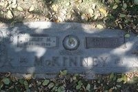

Canaday line · Lester, Raleigh County, West Virginia
Profile status: SUPPORTED
Quick Facts
Born
6 February 1885, Lester, Raleigh County, West Virginia SUPPORTED (birth record ID 3329900; Geni's main field and family accounts say 5 February — see Research Notes.)
Died
23 January 1970, Phoenix, Maricopa County, Arizona SUPPORTED (Find a Grave memorial 67048751, Geni, and Tricia's Ancestry tree agree; no death certificate seen)
Married
Wesley Matthew McKinney, 11 October 1900, at her father William J. Canaday's home, Raleigh County, West Virginia DOCUMENTED (marriage record 11511781; ceremony by minister James C. Thompson; the record names her "Genetta Ella Canaday")
Buried
Green Acres Memorial Park, Scottsdale, Maricopa County, Arizona (Garden of Prayer) SUPPORTED (Find a Grave memorial 67048751 and Geni's burial address, 401 North Hayden Road, Scottsdale)
Married 2 September 1878; five children including Genettie. Geni's linked profile names her mother "Marinda Celia Canaday" (married name); her maiden name was Lilly.
Spouse
Wesley Matthew McKinney (15 September 1881–21 September 1966), married 11 October 1900 DOCUMENTED
Roster follows the family couple profile. Geni links an 11th child, Wilma J McKinney, who appears in neither the couple profile nor Tricia's Ancestry tree; she is not carried here pending a ruling. Tricia's tree replaces Marcil with Maysel McKinney (1907–1982) in the twin slot and lists no Marcil — see Research Notes. All five daughters share the middle name Dare; its origin is unknown. Spouses for the younger children are compiled, not record-proved.
Four siblings, matching the couple profile's five children of William Jacob and Marinda including Genettie. Lundie Everet is also recorded as Londa Everet, who died in 1941. Geni gives only broad estimated birth ranges for these siblings, so no years are shown.
6 February 1885 · age 0 Born, Lester, Raleigh County, West Virginia SUPPORTED (birth day contested — see Research Notes)
11 October 1900 · age 15 Married Wesley Matthew McKinney at her father William J. Canaday's home, Raleigh County, by minister James C. Thompson DOCUMENTED
1904–1923 · ages 19–38 Ten children born: Dallas, Marcil, Garnet, Dorothy, Clynis, Thelma, Leonard, Wesley Arthur, Allen, Forest SUPPORTED
23 January 1970 · age 84 Died, Phoenix, Maricopa County, Arizona SUPPORTED
Buried Green Acres Memorial Park, Scottsdale (Garden of Prayer) SUPPORTED
Life Story
Genettie Ellen Canaday was born on 6 February 1885 at Lester in Raleigh County, West Virginia, the daughter of William Jacob Canaday and Marinda Celia Lilly, and one of their five children. Her birth record gives 6 February; her Geni profile and family accounts say 5 February.
She married Wesley Matthew McKinney on 11 October 1900 at her father's home in Raleigh County, when she was fifteen, the ceremony performed by minister James C. Thompson. The marriage record names her "Genetta Ella Canaday." She and Wesley had ten children, five of them daughters who all share the middle name Dare, and the family lived at Beckley into the 1930s.
She died on 23 January 1970 at Phoenix, Arizona, and was buried at Green Acres Memorial Park in Scottsdale. No portrait of Genettie alone has been found; the photograph above is the portrait from her memorial.
Photo Gallery

Wesley and Genettie's flat marker
Sources and Evidence
West Virginia birth record ID 3329900: Genettie Ellen Canaday, born 6 February 1885, Lester, Raleigh County SUPPORTED (day contested — see Research Notes)
West Virginia marriage record ID 11511781: married 11 October 1900, Raleigh County, at William J. Canaday's home, by minister James C. Thompson; bride recorded as "Genetta Ella Canaday" DOCUMENTED
Find a Grave memorial 67048751, from the couple folder notes (the live page was blocked by Find a Grave's bot wall when checked 4 November 2026): Genettie Ellen Canaday McKinney, died 23 January 1970, Phoenix; burial Green Acres Memorial Park, Scottsdale, Garden of Prayer SUPPORTED
Geni profile: burial place 401 North Hayden Road, Scottsdale (the Green Acres address); spouse, children, and sibling links SUPPORTED
Census records: family at Beckley into the 1930s SUPPORTED
Tricia's Ancestry tree: birth 6 February 1885, Lester; death 23 January 1970, Phoenix; child death years SUPPORTED
Grades: DOCUMENTED an original record says it · SUPPORTED several records point to it · FAMILY ACCOUNT the family's own telling · UNPROVED a lead, not proved.
Research Notes and Open Questions
Birth day: 6 February (birth record, Tricia's tree) against 5 February (Geni's main field, family accounts). The page keeps 6 February, the record date.
Name forms: the marriage record calls her "Genetta Ella Canaday"; her records spelling is "Genettie," used here; Geni's heading is "Genetta Ella McKinney (Canaday)" with "Genettie Ellen" as an also-known-as. FamilySearch carries her preferred name as "Jeanetta Ellen Kennedy" (Social Security Numident, June 2025), with "Genettie Ellen Canaday" listed only as an alternate.
Behind Genettie: her father William Jacob Canaday's parents are UNPROVED — a Jacob Burl Cannaday and Ellender lead sits below 75% and is not linked. William Jacob's stone reads 1853 against the 1852 carried here, and Geni gives his wife Marinda as 1853–1927 (died before 21 January 1927) against the tree's 1854.
Children: the same roster notes as on Wesley's page apply — Geni's 11th child Wilma J is not carried pending a ruling; Tricia's tree replaces Marcil with Maysel (1907–1982) in the twin slot; twin status is an open census conflict; the five daughters' shared middle name Dare has unknown origin; Clynis's gender is conflicted across censuses; child birth conflicts (Dorothy's birthplace, Allen's birth day, Leonard's birth year, Thelma's birth year, Forest's birth year, tree spellings Clennis, Mckenny, Forrest) are carried open; child death years from the tree where Geni shows none are tree-only.
Find a Grave: her memorial tile uses the memorial number, since the live page was blocked by Find a Grave's bot wall when checked; Wesley's verified memorial page lists her as his spouse, "Genettie Ellen Canaday McKinney 1885–1970 (m. 1900)."
MyHeritage: a profile was verified on 21 October 2026 but its URL was not filed, so no tile is shown.
No portrait of Genettie alone has been found; the memorial portrait above shows her with another person, unnamed here. Place photographs in the couple folder (cabin interior, cemetery overviews, courthouse preview) are not shown on this page.
Profile history: Created 4 November 2026 from the family couple profile and research notes.
Type your fixes, stories, records, or photos in our shared doc for this generation, under this person's name. We'll update the profile as soon as we can.